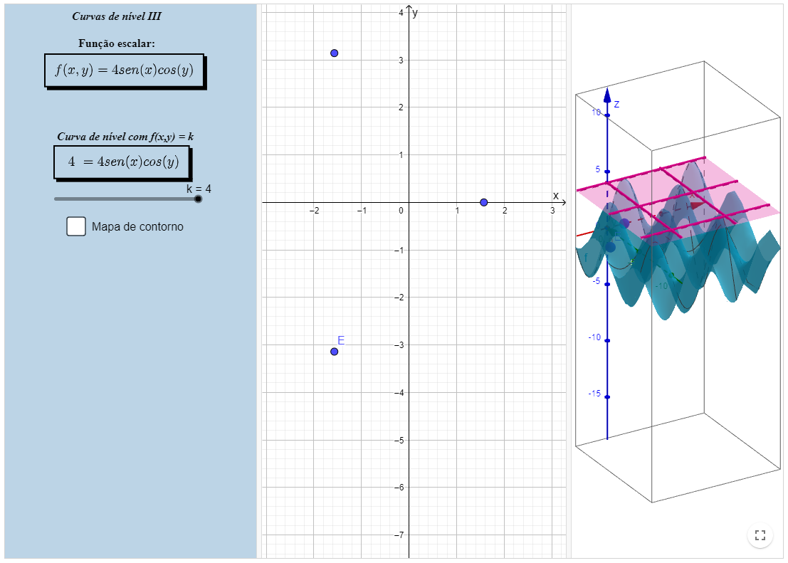
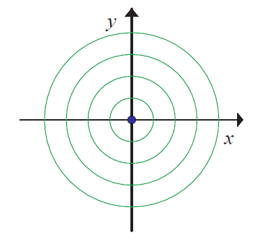

Conjunto de nível de funções escalares de várias variáveis reais
Definição
Seja \( F: \operatorname{Dom}(F) \in \mathbb{R}^{n} \longrightarrow \mathbb{R} \). Dado \( k \in \operatorname{Im}(F) \), temos que o conjunto de nível da função \( F \) correspondente ao nível
\(k\) é o subconjunto do domínio dado por \( C_{k}(F)=\{X \in \operatorname{Dom}(F) \mid F(X)=k\} \).
No caso onde trabalhamos funções escalares de duas variáveis, o conjunto de nível de \(F\) será uma curva , então denominadas curvas de nível. Uma família de curvas de nível é denominada um mapa de contorno.
Quando trabalhamos com funções escalares de três variáveis, o conjunto de nível de \(F\) será uma superfície, então denominada superfície de nível.
Podemos observar o "comportamento" das funções através das curvas ou superfície de nível, o que ajuda na compreensão e na manipulação desse tipo de função.
Abaixo apresentamos quatro applets sobre curvas de nível e um applet sobre superfície de nível.
Curvas de nível I

Curvas de nível II

Curvas de nível III
Curvas de nível IV

Superfície de Nível

Vídeo aula
Acesse a vídeo aula da matéria clicancando aqui.
Caderno base da matéria
Definição
Seja \( f : Dom(f) ⊆ R² → R \). Conforme já sabemos, dado \(k ∈ Im(f) \), temos que o conjunto de nível da função \(f\) correspondente ao níıvel \(k\) é o subconjunto do domínio
dado por \(Ck(f) = {(x, y) ∈ Dom(f) | f(x, y) = k} \).
No caso em questão, que é o das funções reais de duas variáveis reais, os conjuntos de nível de \(f\) são curvas. Por este motivo, os conjuntos de nível de funções reais de duas
variáveis reais são chamados de curvas de nível. Em alguns casos, para certos valores de \(k\), pode acontecer das curvas de nível se degenerarem em pontos, conforme veremos nos
exemplos. Conforme mencionado, as curvas de nível são muito úteis para se ter uma visão do comportamento da função. Isto porque, elas nos fornecem todos os pontos do domínio que
possuem a mesma imagem. Desta forma, se, para valores significativos de \(k\) na imagem da função, conhecêssemos suas curvas de nível \(k\), poderíamos ter uma boa ideia do gráfico
de \(f\), pelo menos de uma forma discretizada. Para isto, “pegaríamos” as curva de nível de \(f\) referentes a \(k\) e as “colocaríamos” no plano \(z = k\).
Observação 3.5.1: Como sabemos que $f$ é constante ao longo das curvas de nível, observe que duas curvas de nível de uma função \(f\) correspondentes aos níveis \(k1\) e \(k2\), onde $k1 = k2$, não podem se interceptar.
Vamos agora fazer alguns exemplos: Exemplo 3.5.1: Determine e esboce as curvas de nível da função: $(f_{4}(x, y)=e^{-\left(x^{2}+y^{2}\right)})$.
Desta forma, tomando a exponencial de ambos os lados da inequação, encontramos que *(e−(x2+y2) ≤ 1, ∀ (x, y) ∈ R2)*. Além disso, como a função exponencial é sempre maior do que zero, temos que *(0 < e−(x2+y2) ≤ 1, ∀ (x, y) ∈ R2)*.
Concluímos assim que, *(Im(f4) = (0, 1])*. Portanto, se *(k ∈ (0, 1])*, o conjunto de nível *(k)* de *(f4)* é dado por *(\mid C_{k}\left(f_{4}\right)=\left\{(x, y) \in \mathbb{R}^{2} \mid e^{-\left(x^{2}+y^{2}\right)}=k\right\})*
Observe que
*(e^{-\left(x^{2}+y^{2}\right)}=k \Leftrightarrow-\left(x^{2}+y^{2}\right)=\ln k \Leftrightarrow x^{2}+y^{2}=-\ln k)*
Desta forma, para *(k = 1)*, temos que
*(x^{2}+y^{2}=-\ln 1=0 \Leftrightarrow x=0 \text { e } y=0)*
de modo que
*(C_{1}\left(f_{4}\right)=\{(0,0)\})*
e, para *(k ∈ (0, 1))*, temos que
*(C_{k}\left(f_{4}\right)=\left\{(x, y) \in \mathbb{R}^{2} \mid x^{2}+y^{2}=-\ln k=\ln \frac{1}{k}\right\})*
isto é, as curvas de nével *(k)* de *(f4)*, para *(k ∈ (0, 1))* são circunferências de centro na origem e raio *(\sqrt{-\ln k}=\sqrt{\ln \frac{1}{k}})*.
Vejamos a seguir exemplos de algumas curvas de nível de *(f4)*.
Para *(k = 1)*, temos o ponto *((x, y) = (0, 0))*;
para *(k = 1/2)*, temos a circunferência *(x^{2}+y^{2}=-\ln \frac{1}{2}=\ln 2)*;
para *(k = 1/6)*, temos a circunferência *(x^{2}+y^{2}=-\ln \frac{1}{6}=\ln 6)*;
para *(k = 1/10)*, temos a circunferência *(x^{2}+y^{2}=-\ln \frac{1}{10}=\ln 10)*.
As curvas de nível de *(f4)* encontram-se esboçadas abaixo:

Observe que precisamos fazer pequenas manipulaçõoes para encontrar a imagem de *(f4)*. Caso tivssemos tido alguma dificuldade em descobrir que *(0 < e^{-\left(x^{2}+y^{2}\right)} < 1)*, *(\forall(x, y) \in \mathbb{R}^{2})*, um procedimento que podemos adotar é supor que *(k)* é um elemento na imagem da função e partir para a descoberta dos conjuntos de nível. No caso, apenas suporíamos que *(k \in \operatorname{Im}\left(f_{4}\right))* e tentaríamos resolver a equação *(e^{-\left(x^{2}+y^{2}\right)}=k)*. Durante o processo, as restrições sobre *(k)* se evidenciariam. De fato, constatamos que só há soluções *((x, y) \in \operatorname{Dom}\left(f_{4}\right)=\mathbb{R}^{2})* para a equação *(e^{-\left(x^{2}+y^{2}\right)}=k \Leftrightarrow x^{2}+y^{2}=-\ln k)*, quando *(-\ln k \geq 0)*. Desta forma, devemos ter *(-\ln k \geq 0 \Leftrightarrow \ln k \leq 0 \Leftrightarrow 0 < k \leq 1)*.
O que fizemos de uma forma reversa foi descobrir que solucionamos a equação *(e^{-\left(x^{2}+y^{2}\right)} = k, (x,y) \in \mathbb{R}^{2})* se e somente se *(0 < k \leq 1)* Isto equivale a dizer que *(\operatorname{Im}\left(f_{4}\right)=(0,1])*.
Atividades
O conteúdo apresentado foi gerado através das notas da professora Denise de Oliveira Pinto, do Departamento de Matemática Aplicada da Universidade Federal Fluminense.
Co-autores: Author:Begoña Alarcón, Guilherme Cardoso Garcia de Carvalho, Raphael Odalvo.